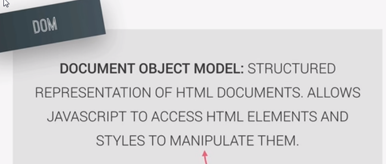

the process of Javascript interacting with a webpage
is called Doing a DOM manipulation
DOM: Document Object Model

Its safe to say that a DOM is basically a connection point between js file and html file
automatically created by the html file when running

API: Applicaiton Programming Interface
its a library that we can use javascript access